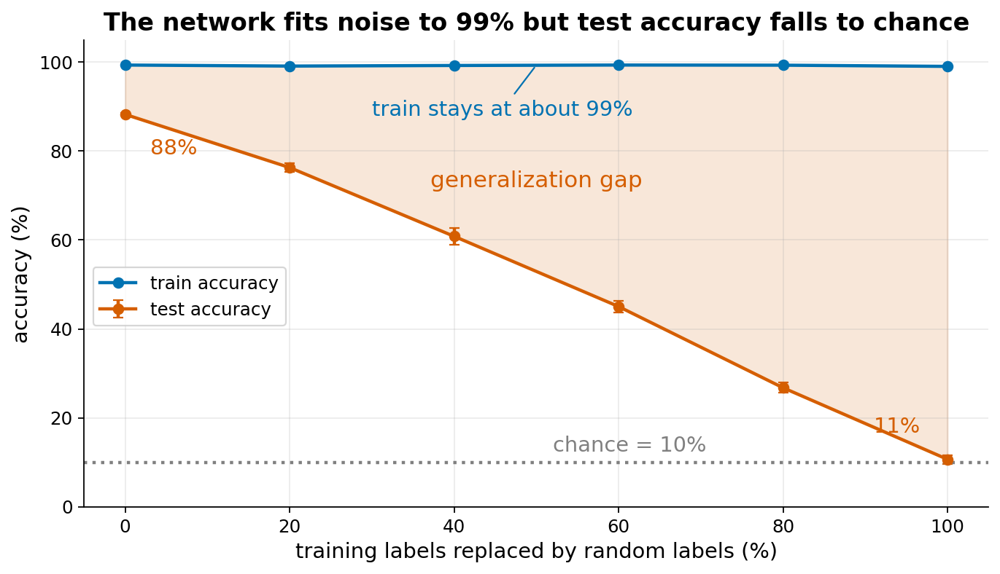
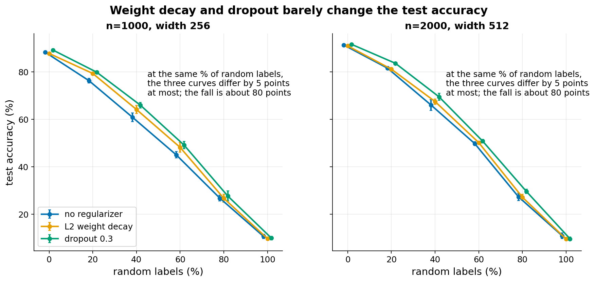
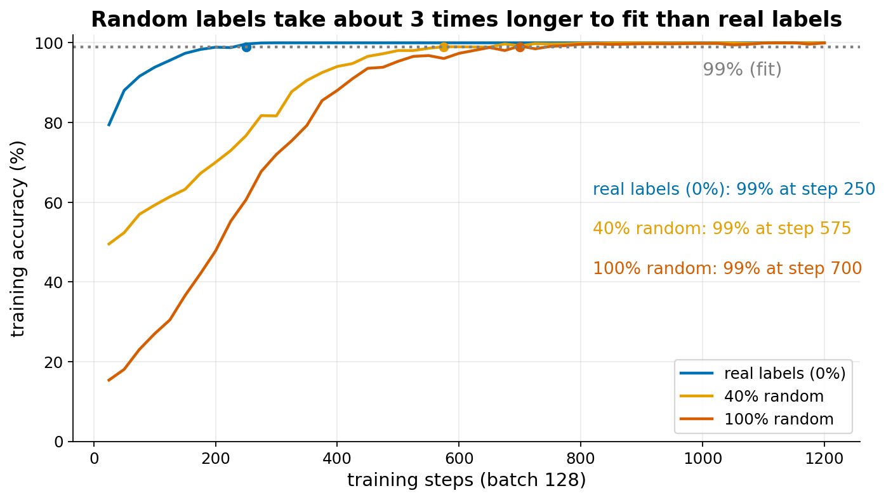

Random labels
Extends the generalization themes (Lab 2), next to regularization.
The idea
Take a training set, for example MNIST digits. Replace the label of some fraction p of the images with a label drawn at random. With p = 1 every label is noise and there is nothing to learn. Train a normal neural network on it anyway. Zhang et al. (2017) showed that large networks still reach almost zero training error. The network memorizes each example individually. Test accuracy is then chance (10% for ten classes), because the labels carry no pattern to generalize.
Why this is surprising: classic theory explains generalization through the capacity of the model class, measured for example by the VC dimension or the Rademacher complexity (a measure of how well the class can fit random labels). A bound of this kind says: if the class cannot fit random labels, then a small training error implies a small test error. Here the same network, with the same training procedure, fits random labels and also generalizes well on real labels. So a bound that depends only on the model class cannot separate the two cases. The bound is then too weak to explain why the network generalizes on real data.
What is established: (1) the experiment itself, reproduced many times; (2) explicit regularizers (weight decay, dropout, data augmentation) are not what makes the difference, since networks without them still generalize; (3) fitting random labels takes more training steps than fitting real labels (Arpit et al. 2017), so the network learns simple, shared patterns first and memorizes the rest later. What is debated: which property of the data, the optimizer (stochastic gradient descent) and the architecture together explains generalization. Proposed directions include the implicit bias of gradient descent towards simple solutions, margin and norm-based bounds, and the study of the double descent curve (Belkin et al. 2019). Uniform-convergence bounds in particular have been argued to be unable to explain the behavior in some settings (Nagarajan and Kolter 2019). There is no single accepted answer.
Link to the course: Goodfellow ch 5 defines capacity, overfitting and underfitting, and the idea that more capacity should raise the gap between train and test error. Chapter 7 presents regularization as the tool that reduces this gap. This experiment tests both: the capacity is large enough to memorize noise, and the regularizers of chapter 7 do not stop it.
References:
- Zhang, Bengio, Hardt, Recht, Vinyals (2017), Understanding deep learning requires rethinking generalization.
- Arpit et al. (2017), A closer look at memorization in deep networks.
- Belkin, Hsu, Ma, Mandal (2019), Reconciling modern machine-learning practice and the classical bias-variance trade-off.
- Nagarajan, Kolter (2019), Uniform convergence may be unable to explain generalization in deep learning.
What students would do
- Guided notebook: load MNIST, keep a training set of 1000 images (the test set is the full 10000). Build a two-hidden-layer MLP (width 256) and train it with Adam, learning rate 1e-3, batch 128, until training accuracy reaches 99%. Record test accuracy.
- Write a function that replaces a fraction p of the training labels with random labels. Predict first: what will test accuracy be at p = 1? Then run it.
- Repeat for p = 0, 0.2, 0.4, 0.6, 0.8, 1. Plot train and test accuracy against p, and the number of steps needed to fit.
- Add a regularizer (L2 weight decay 1e-2, or dropout 0.3) and repeat.
Class grid: 6 values of p times 3 regularizer settings (none, weight decay, dropout). Each student runs one regularizer over all 6 values of p, with a different seed.
The class plot shows test accuracy against p (and training accuracy, and steps to fit), one line per regularizer, mean and spread over students.
Discussion questions:
- The network reaches 99% training accuracy at p = 1. What did it learn?
- Why does the number of steps to fit grow with p?
- The three regularizers give almost the same curves. Does that mean they are useless? (They help a little at p between 0.2 and 0.6; see below.)
- Which statement about capacity from Goodfellow ch 5 does this contradict, and which does it leave intact?
What our prototype found
Setup: MNIST, 2-hidden-layer MLP, Adam 1e-3, batch 128, training stops when training accuracy reaches 99%. Main configuration: n = 1000 images, width 256, 3 seeds. Larger configuration: n = 2000, width 512, 3 seeds. Error bars are one standard deviation over seeds.



| Quantity (n = 1000, width 256) | 0% random | 100% random |
|---|---|---|
| Train accuracy, no regularizer | 99.4% | 99.1% |
| Test accuracy, no regularizer | 88.3% | 10.7% |
| Test accuracy, weight decay 1e-2 | 87.7% | 9.7% |
| Test accuracy, dropout 0.3 | 89.1% | 9.9% |
| Steps to fit, none / weight decay / dropout (mean of 3 seeds) | 225 / 375 / 250 | 692 / 1467 / 1867 |
Larger configuration (n = 2000, width 512): test accuracy without regularizer goes from 91.3% to 10.9%. Dropout does not reach 99% training accuracy within the step limit (6000 steps) at 80% and 100% random labels (training accuracy 97.8% and 94.3%), so these cells must be shown as "did not fit".